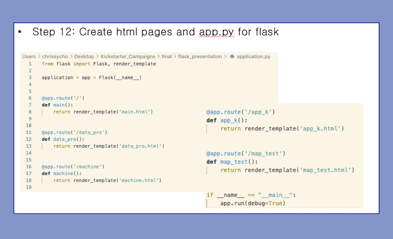
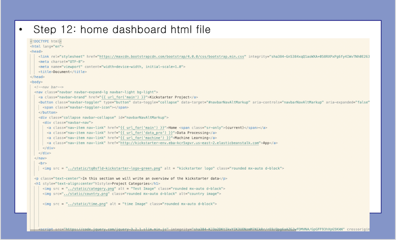
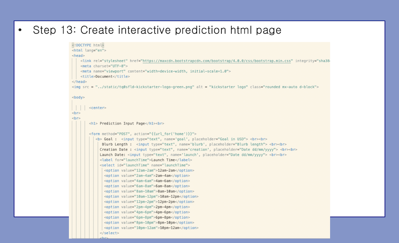
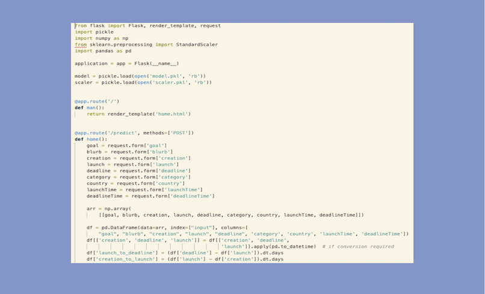
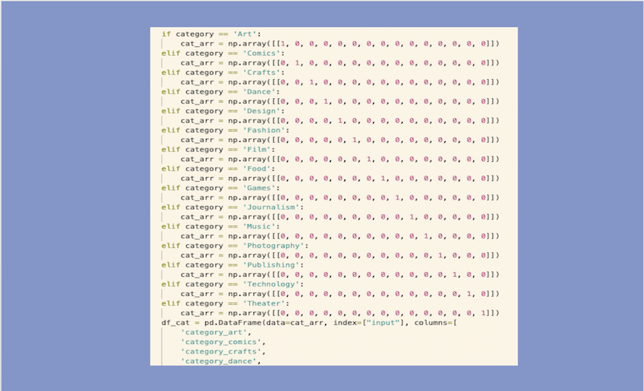
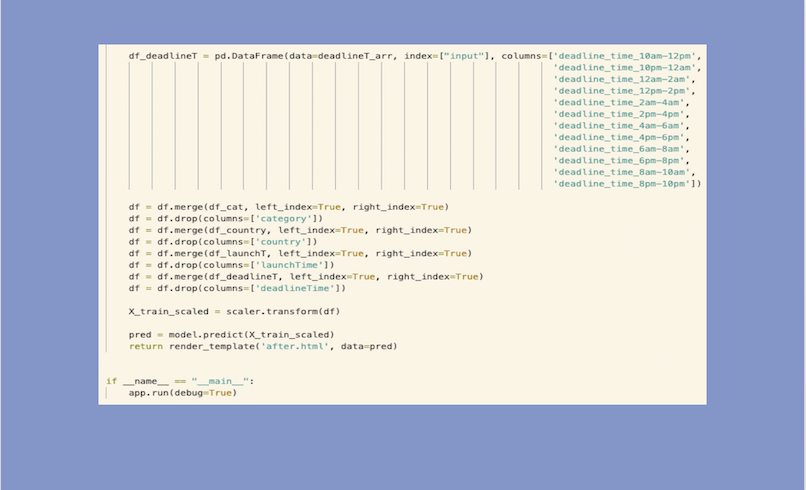
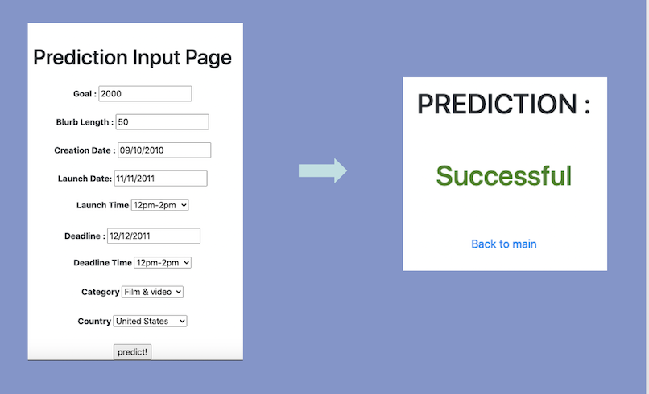
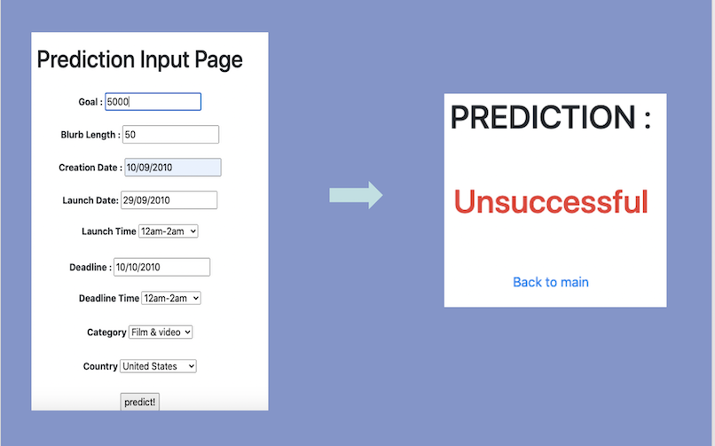

App Construction
We used flask to create a site to display all our information. Below are all the routes to the html files. We used render_template to link everything together
Nav bar was added for ease of use for the user.
The below code shows the page that takes the inputs from the user.
Once submit is clicked on the page, then the below code is initiated. It loads both the pickled scaler and the model. It then take the inputs from the page and converts them to match what we fed into the model. An array is created, then converted into a dataframe. It creates additional columns from the deadline, launch, and creation inputs.
All objects are onehotencoded.
The dataframes are then all merged, duplicate columns deleted, and the data is fed into the saved scaler model. This scaled data is then fed into the saved model.
If the prediction is successful then it will display that on a new page as green
If the prediction is failed then it will display that on a new page as red
